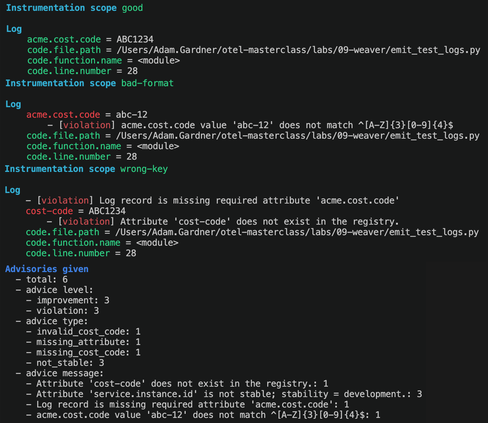

Lab 09: Weaver¶
Time: 25 minutes
Goal¶
Invent a custom attribute that OpenTelemetry does not have, write it down as a machine-readable convention, then use Weaver to check live telemetry against it. You will see what a good, a bad and a wrong record look like.
The scenario¶
Imagine you work for ACME Corporation. ACME runs a shared observability platform, and many teams send their telemetry to it. That platform costs money, and Finance wants to charge each team for what it sends.
To do that, Finance must answer one question: which team sent this telemetry?
Do the exercise first
Think about it for a few minutes before reading on. The rest of the lab reveals one possible answer.
Part 1: Exercise (5 minutes)¶
Look at the OpenTelemetry attribute registry. Is there a standard attribute for "the internal cost code of the team that owns this service"? There is not. It is specific to ACME, so the OpenTelemetry project will never define it.
So you have to invent one. On paper or in a text editor, decide:
- The name. Something like
cost.codeoracme.cost.code. Which is better, and why? - The format. What does a valid value look like? Free text? A number? A fixed pattern?
- Which signals need it. Logs, traces, metrics, or all of them?
- Who enforces it. Finance cannot read every log. How do you know teams really send it, and send it correctly?
Compare with the person next to you.
Part 2: Discuss (5 minutes)¶
Some things to think about:
- Use a prefix you own.
acme.cost.codeis better thancost.code. OpenTelemetry may add its owncost.codeone day with a different meaning, and your data would clash with it. The OpenTelemetry guidance is to put your own attributes in your own namespace, hereacme.. - The name is not enough. If one team sends
acme.cost.code, another sendscost-codeand a third sendsacme.costcode, Finance cannot group anything. This is the same problem you saw in Lab 08. - The value must be valid.
abc-12orMarketingis useless for charging. We need a rule for the format. - A wiki page does not work. Nobody reads it, and nobody checks it.
We will use these decisions in this lab: the name is acme.cost.code, and the format is three capital letters and four digits, for example ABC1234. Every log record must have it.
Why Weaver¶
Weaver is an OpenTelemetry tool that turns your convention into a schema (a registry) that a machine can read. With one schema you can:
- check that telemetry follows the rules (we do this in this lab)
- generate documentation and code
- run the check in a CI/CD pipeline, so bad telemetry never reaches production
flowchart LR
Reg["Registry<br/>(one definition)"] --> Check["Check live telemetry"]
Reg --> Gen["Generate code and docs"]
Check --> CI["CI/CD"]Part 3: Define it and check it¶
The files¶
The lab files are in labs/09-weaver/.
| File | What it does |
|---|---|
model/manifest.yaml |
Names our registry (acme). It also imports the standard OpenTelemetry conventions, so we check against both. |
model/imports.yaml |
Says "import everything" from the OpenTelemetry registry. |
model/cost.yaml |
Defines the new attribute acme.cost.code with a description and examples. |
policies/cost_code.rego |
Two rules: the value must match ^[A-Z]{3}[0-9]{4}$, and every log must have the attribute. |
emit_test_logs.py |
Sends 3 test logs to Weaver. |
The registry and the policy do different jobs
cost.yaml says the key exists and what it means. The descriptions and examples are for humans. The format of the value is checked by the policy in cost_code.rego (written in a language called Rego). Weaver does not read the regex from the YAML.
Steps¶
Docker must be running. You need Python 3.11+.
- Go to the lab folder, turn on the virtual environment from Setup and pull the Weaver image:
- Check that the registry is valid:
You should see
✔ No after_resolution policy violation. Weaver downloads the OpenTelemetry conventions the first time, so this can take a few seconds. - Open two terminals in
labs/09-weaver. In terminal 1, start Weaver inlive-checkmode. It is a server that waits for telemetry on port 4317 and checks every record. It stops after 30 seconds without data:Wait until you seedocker run --rm -v "$(pwd)":/work -w /work -p 4317:4317 -p 4320:4320 otel/weaver:v0.28.0 \ registry live-check -r /work/model --advice-policies /work/policies \ --otlp-grpc-address 0.0.0.0 --inactivity-timeout 30OTLP gRPC listener started. - In terminal 2, activate the environment and send the 3 test logs:
- Go back to terminal 1. Wait for Weaver to stop, or press
Ctrl+C. It prints a report.
On Windows?
Use PowerShell. Replace $(pwd) with ${PWD}, and activate the environment with:
Expected result¶
Weaver prints one block per log. Read the Log part of each block. Colours in the terminal: green is fine, red is a violation.
Log 1: good is compliant. Every attribute is green.
Log 2: bad-format has the right key, but a wrong value:
Log
acme.cost.code = abc-12
- [violation] acme.cost.code value 'abc-12' does not match ^[A-Z]{3}[0-9]{4}$
Log 3: wrong-key has the right value, but the wrong key. Two violations: the key is not in the registry, and the required key is missing:
Log
- [violation] Log record is missing required attribute 'acme.cost.code'
cost-code = ABC1234
- [violation] Attribute 'cost-code' does not exist in the registry.
At the end is a summary. We got 3 violations (one per bad log) and 3 improvement messages:
What are the 3 improvements?
Each log also has service.instance.id, which the SDK adds. In this OpenTelemetry version it is not stable yet, so Weaver says so. It is only advice. You can ignore it.
Weaver has levels: violation (must fix), improvement (should fix) and information (FYI). You choose the level in your policy.

Exercise: add an enum attribute¶
ACME also wants an attribute acme.environment. Only two values are allowed: prod and staging.
- Add this to the end of
model/cost.yaml, underattributes:(keep the indentation: it lines up with- id: acme.cost.code): - Check the registry again (step 2).
- In
emit_test_logs.py, change thegoodandbad-formatlines to: - Run Weaver (step 3), then send the logs (step 4).
You should see that acme.environment = prod is clean, and for production Weaver says:
acme.environment = production
- [information] Enum attribute 'acme.environment' has value 'production' which is not documented.
An enum is checked by Weaver without a policy. You only had to define it. Notice the level is information, not violation. To make it a hard failure, you would write a Rego rule like the one in cost_code.rego.
Weaver in a pipeline¶
Weaver can write its report as JSON or YAML (--output), so a CI/CD job can read it. A team could run their tests with Weaver in live-check mode, and fail the build on any violation. See weaver registry live-check --help.
Stuck?¶
Cannot connect to the Docker daemon: start Docker.port is already allocated(4317): a collector from another lab is running. Stop it from that lab's folder:- The Python script prints errors about the connection: Weaver is not ready yet. Wait for
OTLP gRPC listener started, then run it again. - Weaver stops before you send logs: the 30 second timeout ran out. Start it again.
registry checkfails with a YAML error: indentation. Use spaces, not tabs. The new attribute must line up with the first one.- No difference after you edit the registry: Weaver reads
model/when it starts. Stop it and start it again. ModuleNotFoundError: opentelemetry: you did not activate the environment in terminal 2.
Going further¶
- Add a Rego rule that makes an unknown
acme.environmentvalue aviolation. - Point Weaver at a real app: send the OTLP data from Lab 03 to port 4317. Which of your custom attributes (
order.id,shop.orders) are not in any registry? - Read the Weaver docs and the original hands-on repo. It also checks plain-text logs coming from a collector
filelogreceiver. Why do you think the plain-text log fails the check?